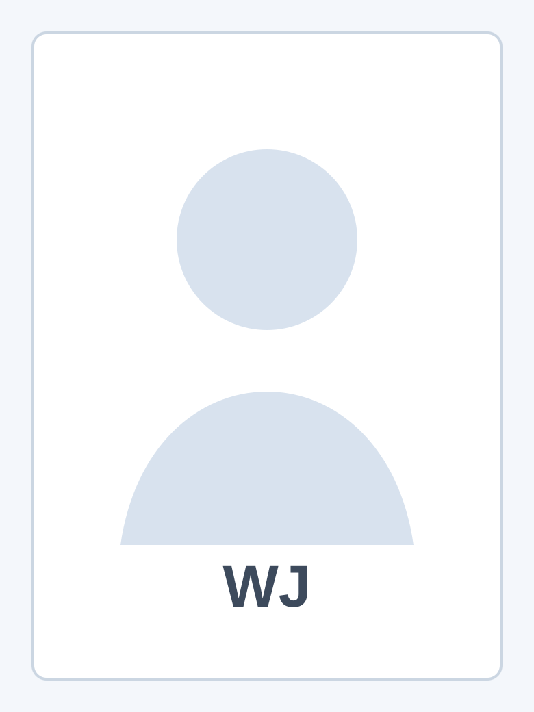

Welcome. I am Wenjie Jiang, a PhD Candidate in Behavioral Economics at the Erasmus School of Economics, Erasmus University Rotterdam.
I am affiliated with the Behaviour, Organisations and Markets / Applied Economics research group. My research interests include behavioral economics, cognitive economics, dishonesty and social image, complexity in decision-making, risk and time preferences, moral decision-making, and experimental economics.
Add a short personal research statement here.
About
I am a PhD Candidate in Behavioral Economics at Erasmus School of Economics, Erasmus University Rotterdam. I am part of the Behaviour, Organisations and Markets / Applied Economics research group.
Add more details about your academic background, supervisors, dissertation topic, or current research agenda here.
Research
My research interests are centered on how people make decisions in social, moral, and cognitively complex environments.
- Behavioral economics
- Cognitive economics
- Dishonesty and social image
- Complexity in decision-making
- Risk and time preferences
- Moral decision-making
- Experimental economics
Add current research projects here.
Publications and Working Papers
Add working paper title here | with Add coauthors here
Add status, conference information, or journal information here.
Add abstract here.
Add publication title here
Add journal, year, and link here.
Teaching
Add teaching experience, courses, teaching assistant roles, guest lectures, or supervision here.
Academic Activities
Add seminar presentations, conference participation, referee service, workshop organization, memberships, or other academic activities here.
CV
Add CV PDF here.
After adding your CV file, replace this placeholder with a download link.
Contact
Wenjie Jiang
PhD Candidate in Behavioral Economics
Erasmus School of Economics, Erasmus University Rotterdam
Behaviour, Organisations and Markets / Applied Economics
Add email address, office address, and academic profile links here.